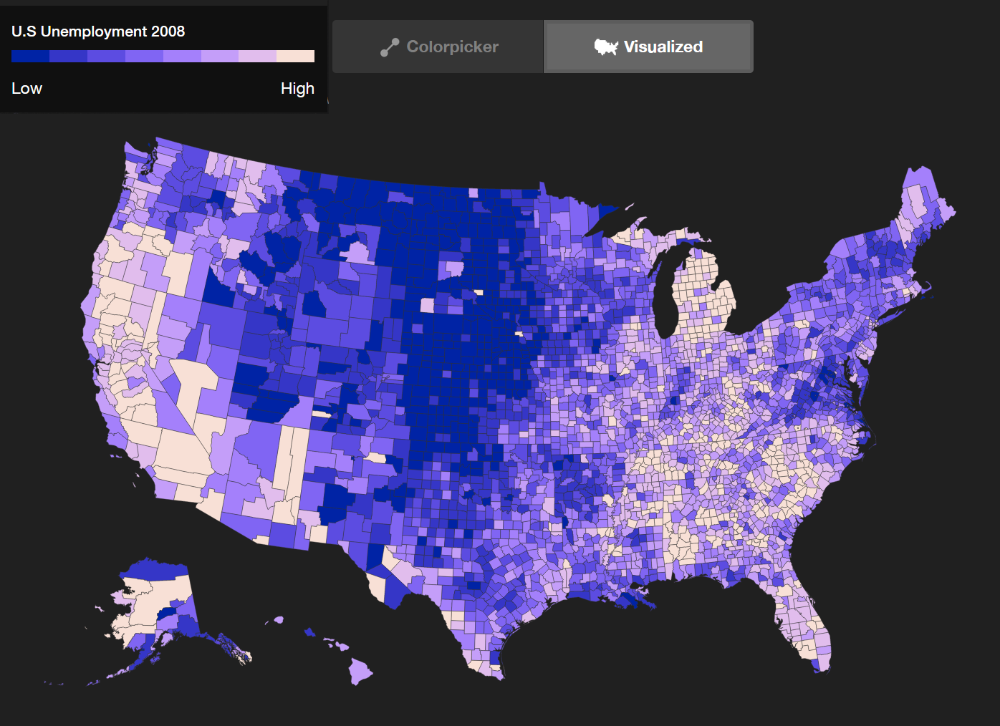

1. Introduction
This section is not normative.
Web developers, design tools and design system developers often use color functions to assist in scaling the design of their component color relations. With the increasing usage of design systems that support multiple platforms and multiple user preferences, like the increased capability of Dark Mode in UI, this becomes even more useful to not need to manually set color, and to instead have a single source from which schemes are calculated.


Currently Sass, calc() on HSL values, or PostCSS is used to do this. However, preprocessors are unable to work on dynamically adjusted colors; all current solutions are restricted to the sRGB gamut and to the perceptual limitations of HSL (colors are bunched up in the color wheel, and two colors with visually different lightness, like yellow and blue, can have the same HSL lightness).
This module adds a new function: color-mix(), and extends existing ones with relative color syntax.
It also extends the color() function so that not only predefined color spaces, but also custom color spaces defined by ICC profiles (including calibrated CMYK) can be used in CSS.
It also adds device-cmyk, a representation of uncalibrated cmyk color.
2. Mixing Colors: the color-mix() Function
This function takes two <color> specifications and returns the result of mixing them, in a given <color-space>, by a specified amount.
color-mix() = color-mix( <color-interpolation-method> , [ <color> && <percentage [0,100]>? ]#{2})
Tests
2.1. Percentage Normalization
Percentages are required to be in the range 0% to 100%. Negative percentages are specifically disallowed. The percentages are normalized as follows:
-
Let p1 be the first percentage and p2 the second one.
-
If both percentages are omitted, they each default to 50% (an equal mix of the two colors).
-
Otherwise, if p2 is omitted, it becomes 100% - p1
-
Otherwise, if p1 is omitted, it becomes 100% - p2
-
If the percentages sum to zero, the function is invalid.
-
Otherwise, if both are provided and add up to greater than 100%, they are scaled accordingly so that they add up to 100%.
-
Otherwise, if both are provided and add up to less than 100%, the sum is saved as an alpha multiplier. They are then scaled accordingly so that they add up to 100%.
This means that p1 becomes p1 / (p1 + p2) and p2 becomes p2 / (p1 + p2).
Tests
color-mix ( in lch, purple50 % , plum50 % ) color-mix ( in lch, purple50 % , plum) color-mix ( in lch, purple, plum50 % ) color-mix ( in lch, purple, plum) color-mix ( in lch, plum, purple) color-mix ( in lch, purple80 % , plum80 % )
All produce a 50-50 mix of purple and plum, in lch: lch(51.51% 52.21 325.8) which is rgb(68.51% 36.01% 68.29%).
However, this form is not the same, as the alpha is less than one:
color-mix ( in lch, purple30 % , plum30 % )
This produces lch(51.51% 52.21 325.8 / 0.6) which is rgb(68.51% 36.01% 68.29% / 0.6).
2.2. Calculating the Result of color-mix
After normalizing both percentages, the result is produced via the following algorithm:
-
Both colors are converted to the specified <color-space>. If the specified color space cannot express the color (for example, the hsl and hwb spaces cannot express colors outside the sRGB gamut), gamut mapping will occur.
-
Colors are then interpolated in the specified color space, as described in CSS Color 4 § 12. Color Interpolation. If the specified color space is a cylindrical-polar-color space, then the <hue-interpolation-method> controls the interpolation of hue, as described in CSS Color 4 § 12.4 Hue Interpolation. If no <hue-interpolation-method> is specified, it is as if shorter had been specified. If the specified color space is a rectangular-orthogonal-color space, then specifying a <hue-interpolation-method> is an error.
-
If an alpha multiplier was produced during percentage normalization, the alpha component of the interpolated result is multiplied by the alpha multiplier.
Tests
The result of mixing is the color at the specified percentage along the progression of the second color to the first color.
Note: As a corrollary, a percentage of 0% just returns the other color converted to the specified color space, and a percentage of 100% returns the same color converted to the specified color space.
color-mix ( in lch, peru40 % , palegoldenrod)
The mixing is done in lch color space. Here is a top-down view, looking along the neutral L axis:
The calculation is as follows:
-
peru is lch(62.253% 54.011 63.677)
-
palegoldenrod is lch(91.374% 31.406 98.834)
-
the mixed lightness is 62.253 * 40/100 + 91.374 * (100-40)/100 = 79.7256
-
the mixed chroma is 54.011 * 40/100 + 31.406 * (100-40)/100 = 40.448
-
the mixed hue is 63.677 * 40/100 + 98.834 * (100-40)/100 = 84.771
-
the mixed result is lch(79.7256% 40.448 84.771)
Note: interpolating on hue and chroma keeps the intermediate colors as saturated as the endpoint colors.
color-mix ( in lch, teal65 % , olive);
The calculation is as follows:
-
sRGB teal (#008080) is lch(47.9855% 31.6903 196.4524)
-
sRGB olive (#808000) is lch(52.1496% 56.8124 99.5746)
-
mixed lightness is 47.9855 * 0.65 + 52.1496 * 0.35 = 49.4429
-
mixed chroma is 31.6903 * 0.65 + 56.8124 * 0.35 = 40.4830
-
mixed hue is 196.4524 * 0.65 + 99.5746 * 0.35 = 162.5452
-
mixed result is lch(49.4429% 40.4830 162.5452)
-
which is a slightly-blueish green: rgb(7.7377% 52.5730% 37.3213%)
2.3. Effect of Mixing Color Space on color-mix
The choice of mixing color space can have a large effect on the end result.
color-mix ( in lch, white, black); color-mix ( in xyz, white, black); color-mix ( in srgb, white, black);
The calculation is as follows:
-
sRGB white (#FFF) is lch(100% 0 0)
-
sRGB black (#000) is lch(0% 0 0)
-
The mix in LCH is lch(50% 0 0)
-
The mix in XYZ is lch(76% 0 0)
-
The mix in sRGB is lch(53.4% 0 0)
The mix in LCH gives an L value of 50%, a perfect mid gray, exactly as expected (mixing in Lab would do the same, as the Lightness axis is the same in LCH and Lab).
The mix in XYZ gives a result that is too light; XYZ is linear-light but is not perceptually uniform. The mix in sRGB gives a result that is a bit too light; sRGB is neither perceptually uniform nor linear-light.
color-mix ( in xyz, rgb ( 82.02 % 30.21 % 35.02 % ) 75.23 % , rgb ( 5.64 % 55.94 % 85.31 % ));
The calculation is as follows:
-
rgb(82.02% 30.21% 35.02%) is lch(52% 58.1 22.7) which is X=0.3214, Y=0.2014, Z=0.0879.
-
rgb(5.64% 55.94% 85.31%) is lch(56% 49.1 257.1) which is X=0.2070, Y=0.2391, Z=0.5249.
-
mixed result X=(0.3214 * 0.7523) + (0.2070 * (1 - 0.7523)) = 0.29306.
-
mixed result Y=(0.2014 * 0.7523) + (0.2391 * (1 - 0.7523)) = 0.21074.
-
mixed result Z=(0.0879 * 0.7523) + (0.5249 * (1 - 0.7523)) = 0.19614.
-
mix result is lch(53.0304% 38.9346, 352.8138) which is rgb(72.300% 38.639% 53.557%)
This example is a 50% mix of white and blue, in three different color spaces.
color-mix ( in lch, white, blue); color-mix ( in oklch, white, blue); color-mix ( in srgb, white, blue);
The calcuation is as follows:
-
white is rgb(100% 100% 100%) which is lch(100% 0 none) which is oklch(100% 0 none)
-
blue is rgb(0% 0% 100%) which is lch(29.5683% 131.201 301.364) which is oklch(45.201% 0.31321 264.052)
-
mix in lch is lch(64.7841% 65.6008 301.364) which is quite purple
-
mix in oklch is oklch(72.601 0.15661 264.052)
-
mix in srgb is rgb(50% 50% 100%) which is also a bit purple
color-mix ( in hsl, color ( display-p30 1 0 ) 80 % , yellow);
The calcuation is as follows:
-
color(display-p3 0 1 0) is color(srgb -0.5116 1.01827 -0.3107) which is outside the sRGB gamut
-
after CSS gamut mapping,the new color is color(srgb 0 0.99797 0) which can now be converted to hsl hsl(120 100% 49.898%)
-
yellow is hsl(60 100% 50%)
-
the hue is 120 × 0.8 + 60 × 0.2 = 108
-
the saturation is 100%
-
the lightness is 49.898 × 0.8 + 50 × 0.2 = 49.9184
-
the mixed result is hsl(108 100% 49.9184%) which is color(display-p3 0.48903 0.98415 0.29889)
2.4. Effect of Non-Unity Alpha on color-mix
So far, all the color-mix() examples have used fully opaque colors. To simplify the examples, the premultilication and unpremultiplication steps were omitted because these would simply multiply by 1, and divide by 1, so the result would be unchanged.
In the general case, colors may have non-unity alpha components and thus the premultiply, interpolate, unpremultiply steps must not be omitted.
color-mix ( in srgb, rgb ( 100 % 0 % 0 % /0.7 ) 25 % , rgb ( 0 % 100 % 0 % /0.2 ));
The calcuation is as follows:
-
rgb(100% 0% 0% / 0.7) when premultiplied, is [0.7, 0, 0]
-
rgb(0% 100% 0% / 0.2) when premultiplied, is [0, 0.2, 0]
-
the premultiplied, interpolated result is [0.7 * 0.25 + 0 * (1 - 0.25), 0 * 0.25 + 0.2 * (1 - 0.25), 0 * 0.25 + 0 * (1 - 0.25)] which is [0.175, 0.150, 0]
-
the interpolated alpha is 0.7 * 0.25 + 0.2 * (1 - 0.25) = 0.325
-
the un-premultiplied result is [0.175 / 0.325, 0.150 / 0.325, 0 / 0.325] which is [0.53846, 0.46154, 0]
-
so the mixed color is color(srgb 0.53846 0.46154 0 / 0.325)
The incorrect calculation would be:
-
the interpolated result is [1 * 0.25 + 0 * (1 - 0.25), 0 * 0.25 + 1 * (1 - 0.25), 0 * 0.25 + 0 * (1 - 0.25)] which is [0.25, 0.75, 0]
-
so the incorrect mixed color is color(srgb 0.25 0.75 0 / 0.325)
This is a huge difference; the ΔE2000 between the correct and incorrect results is 30.7!
When the percentage normalization generates an alpha multiplier, the calculation is the same except for an additional last step.
However in this case the percentages are specified as 20% of the first color and 60% of the second. This adds to 80% so the alpha multiplier is 0.8.
The mix percentages are then scaled
by a factor of 100/80:
20% * 100/80 = 25%
60% * 100/80 = 75%
giving the same final mix percentages as the previous example.
color-mix ( in srgb, rgb ( 100 % 0 % 0 % /0.7 ) 20 % , rgb ( 0 % 100 % 0 % /0.2 ) 60 % );
The calcuation is as follows:
-
rgb(100% 0% 0% / 0.7) when premultiplied, is [0.7, 0, 0]
-
rgb(0% 100% 0% / 0.2) when premultiplied, is [0, 0.2, 0]
-
the premultiplied, interpolated result is [0.7 * 0.25 + 0 * (1 - 0.25), 0 * 0.25 + 0.2 * (1 - 0.25), 0 * 0.25 + 0 * (1 - 0.25)] which is [0.175, 0.150, 0]
-
the interpolated alpha is 0.7 * 0.25 + 0.2 * (1 - 0.25) = 0.325
-
the un-premultiplied result is [0.175 / 0.325, 0.150 / 0.325, 0 / 0.325] which is [0.53846, 0.46154, 0]
-
so the mixed color would be color(srgb 0.53846 0.46154 0 / 0.325)
-
there is a 0.8 alpha multiplier, so the alpha of the mixed result is actually 0.325 * 0.8 = 0.260 so the mixed color is actually color(srgb 0.53846 0.46154 0 / 0.260)
Note: do not multiply the interpolated alpha by the alpha multiplier and then use that to undo premultiplication. That would be correct if the mix percentages were not scaled to sum to 100%, but they are, so doing it this way would adjust the mixed color twice.
3. Relative Color Syntax
In previous levels of this specification, the color functions could only specify colors in an absolute manner, by directly specifying all of the color channels.
The new relative color syntax allows existing colors to be modified using the color functions: if an origin color is specified, then each color channel can either be directly specified, or taken from the origin color (and possibly modified with math functions).
The precise details of each function’s changes to accomodate relative colors are listed below, but they all follow a common structure:
-
An origin color can be specified with a from <color> value at the start of the function.
-
If an origin color is specified, the remaining arguments can either be specified directly, as normal, be specified as a channel keyword referring to one of the channels of the origin color. Math functions can also use these keywords to do dynamic modifications of the origin color’s channels.
-
Relative color syntax doesn’t change whether an argument is required or optional. If the alpha value is omitted, however, it defaults to taking from the origin color (rather than defaulting to 100%, as it does in the absolute syntax).
-
Relative color syntax only applies to the modern (space separated components, / separator for alpha) syntax. It cannot be used with legacy color syntax and attempting to do so is an error.
If the origin color was originally specified with a different color function, it’s first converted into the chosen color function, so it has meaningful values for the channels.
Tests
html{ --bg-color : blue; } .overlay{ background : rgb ( fromvar ( --bg-color) r g b /80 % ); }
In this example, the r, g, and b channels of the origin color are unchanged, indicated by specifying them with the keywords drawing their values from the origin color, but the opacity is set to 80% to make it slightly transparent, regardless of what the origin color’s opacity was.
html{ --color : green; } .foo{ --darker-accent : lch ( fromvar ( --color) calc ( l /2 ) c h); }
In this example, the origin color is darkened by cutting its lightness in half, without changing any other aspect of the color.
Note as well that the origin color is a color keyword (and thus, sRGB), but it’s automatically interpreted as an LCH color due to being used in the lch() function.
For example, to do a rough approximation of grayscaling a color:
--blue-into-gray : rgb ( fromvar ( --color) calc ( r *.3 + g *.59 + b *.11 ) calc ( r *.3 + g *.59 + b *.11 ) calc ( r *.3 + g *.59 + b *.11 ));
Using this, red would become rgb(30% 30% 30%), lime would become rgb(59% 59% 59%), and blue would become rgb(11% 11% 11%). A more moderate color, like darkolivegreen, which has RGB values rgb(85 107 47), would become approximately rgb(37% 37% 37%).
(Rough because firstly, although this looks like a luminance calculation, the red green and blue values are manipulated in gamma-encoded space rather than linear-light; secondly, the weighting factors are those for the obsolete NTSC color space, not sRGB.)
(Note, too, that this is just to illustrate the syntax; an easier and more accurate way to grayscale a color is to use the oklch() function, as that color space is more accurate to human perception: oklch(from var(--color) l 0 h) preserves the lightness, but zeroes out the chroma, which determines how "colorful" the color is.)
3.1. Relative sRGB Colors
The grammar of the rgb() function is extended as follows:
rgb() = rgb( [<percentage> | none]{3} [ / [<alpha-value> | none] ]? ) |
rgb( [<number> | none]{3} [ / [<alpha-value> | none] ]? ) |
rgb( [ from <color> ]? [ <number> | <percentage> | none]{3} [ / [<alpha-value> | none] ]? )
<alpha-value> = <number> | <percentage>
Within a relative color syntax rgb() function, the allowed channel keywords are:
-
r, g, and b are all <percentage>s or <number>s that correspond to the origin color’s red, green, and blue channels after its conversion to sRGB. For <number>s, 255 (or 255.0) is equivalent to 100%.
-
alpha is a <number> or <percentage> that corresponds to the origin color’s alpha transparency
rgb(from indianred 255 g b)
This takes the sRGB value of indianred (205 92 92) and replaces the red channel with 255 to give rgb(255 92 92).
Relative color syntax is only applicable to the non-legacy RGB syntactic forms.
rgba(from 16 32 b / 0.5 )
rgb(from 16 32 b / 0.5 )
This takes the sRGB value of darkblue (0 0 139) and replaces the red, green and alpha channels to give rgb(16 32 139 / 0.5)
3.2. Relative HSL Colors
The grammar of the hsl() function is extended as follows:
hsl() = hsl([from <color>]?
[<hue> | none]
[<percentage> | <number> | none]
[<percentage> | <number> | none]
[ / [<alpha-value> | none] ]? )
Within a relative color syntax hsl() function, the allowed channel keywords are:
-
h is an <angle> that corresponds to the origin color’s HSL hue after its conversion to sRGB, normalized to a [0deg, 360deg) range
-
s and l are <percentage>s or <number>s that correspond to the origin color’s HSL saturation and lightness after its conversion to sRGB
-
alpha is a <number> or <percentage> that corresponds to the origin color’s alpha transparency
--accent: lightseagreen; --complement: hsl(from var(--accent) calc(h + 180deg) s l);
lightseagreen is hsl(177deg 70% 41%), so --complement is hsl(357deg 70% 41%)
Relative color syntax is only applicable to the non-legacy HSL syntactic forms.
3.3. Relative HWB Colors
The grammar of the hwb() function is extended as follows:
hwb() = hwb([from <color>]?
[<hue> | none]
[<percentage> | <number> | none]
[<percentage> | <number> | none]
[ / [<alpha-value> | none] ]? )
Within a relative color syntax hwb() function, the allowed channel keywords are:
-
h is an <angle> that corresponds to the origin color’s HWB hue after its conversion to sRGB, normalized to a [0deg, 360deg) range
-
w and b are <percentage>s or <number>s that correspond to the origin color’s HWB whiteness and blackness after its conversion to sRGB
-
alpha is a <number> or <percentage> that corresponds to the origin color’s alpha transparency
3.4. Relative Lab Colors
The grammar of the lab() function is extended as follows:
lab() = lab([from <color>]?
[<percentage> | <number> | none]
[<percentage> | <number> | none]
[<percentage> | <number> | none]
[ / [<alpha-value> | none] ]? )
Within a relative color syntax lab() function, the allowed channel keywords are:
-
l is a <percentage> or <number> that corresponds to the origin color’s CIE Lightness
-
a and b are <percentage>s or <number>s that correspond to the origin color’s CIELab a and b axes
-
alpha is a <number> or <percentage> that corresponds to the origin color’s alpha transparency
-
lab(from var(--mycolor) l a b / 100%) sets the alpha of var(--mycolor) to 100% regardless of what it originally was.
-
lab(from var(--mycolor) l a b / calc(alpha * 0.8)) reduces the alpha of var(--mycolor) by 20% of its original value.
-
lab(from var(--mycolor) l a b / calc(alpha - 20%)) reduces the alpha of var(--mycolor) by 20% of 100%.
Note that all the adjustments are lossless in the sense that no gamut clipping occurs, since lab() encompasses all visible color. This is not true for the alpha adjustments in the sRGB based functions (such as 'rgb()', 'hsl()', or 'hwb()'), which would also convert to sRGB in addition to adjusting the alpha transparency.
--mycolor: orchid; // orchid is lab(62.753% 52.460 -34.103) --mygray: lab(from var(--mycolor) l 0 0) // mygray is lab(62.753% 0 0) which is rgb(59.515% 59.515% 59.515%)
3.5. Relative Oklab Colors
The grammar of the oklab() function is extended as follows:
oklab() = oklab([from <color>]?
[<percentage> | <number> | none]
[<percentage> | <number> | none]
[<percentage> | <number> | none]
[ / [<alpha-value> | none] ]? )
Within a relative color syntax oklab() function, the allowed channel keywords are:
-
l is a <percentage> or <number> that corresponds to the origin color’s Oklab Lightness
-
a and b are <percentage>s or <number>s that correspond to the origin color’s Oklab a and b axes
-
alpha is a <number> or <percentage> that corresponds to the origin color’s alpha transparency
3.6. Relative LCH Colors
The grammar of the lch() function is extended as follows:
lch() = lch([from <color>]?
[<percentage> | <number> | none]
[<percentage> | <number> | none]
[<hue> | none]
[ / [<alpha-value> | none] ]? )
Within a relative color syntax lch() function, the allowed channel keywords are:
-
l is a <percentage> or <number> that corresponds to the origin color’s CIE Lightness
-
c is a <percentage> or <number> that corresponds to the origin color’s LCH chroma
-
h is an <angle> that corresponds to the origin color’s LCH hue, normalized to a [0deg, 360deg) range.
-
alpha is a <number> or <percentage> that corresponds to the origin color’s alpha transparency
Because LCH is both perceptually uniform and chroma-preserving, and because the axes correspond to easily understood attributes of a color, LCH is a good choice for color manipulation.
--accent: lightseagreen; --complement: LCH(from var(--accent) l c calc(h + 180deg));
lightseagreen is LCH(65.4937% 39.4484 190.1013), so --complement is LCH(65.4937% 39.4484 370.1013)
--mycolor: orchid; // orchid is lch(62.753% 62.571 326.973) --mygray: lch(from var(--mycolor) l 0 h) // mygray is lch(62.753% 0 326.973) which is rgb(59.515% 59.515% 59.515%)
But now (since the hue was preserved) re-saturating again
--mymuted: lch(from var(--mygray) l 30 h); // mymuted is lch(62.753% 30 326.973) which is rgb(72.710% 53.293% 71.224%)
However, unlike HSL, manipulations are not guaranteed to be in-gamut.
--mycolor: lch(60% 90 320); lch(from var(--mycolor) l c calc(h - 120));
This gives a very high-chroma blue-green, lch(60% 90 200) which is color(srgb -0.6 0.698 0.772) and thus out of gamut (negative red value) for sRGB. Indeed, it is out of gamut for display-p3: color(display-p3 -0.46 0.68 0.758) and even rec2020: color(rec2020 -0.14 0.623 0.729).
The closest color inside the sRGB gamut would be lch(60.71% 37.56 201.1) which is rgb(0% 64.2% 66.3%). The difference in chroma (37.5, instead of 90) is huge.
Diagram of CIE CH plane showing relative color manipulation. The a and b axes are labelled, and cross in the middle. We are looking down the central Lightness axis. The maximal gamut of the sRGB color space is shown as an irregular, convex polygon.
Performing the same operation in HSL will return an in-gamut result. But it is unsatisfactory in other ways:
--mycolor: lch(60% 90 320); hsl(from var(--mycolor) calc(h - 120) s l);
In HSL, --mycolor is hsl(289.18 93.136% 65.531%) so subtracting 120 degrees gives hsl(169.18 93.136% 65.531%). Converting that result back to LCH lch(89.0345% 49.3503 178.714) we see that, due to the hue rotate in HSL, Lightness shot up from 60% to 89%, the Chroma has dropped from 90 to 49, and the Hue actually changed by 141 degrees not 120.
3.7. Relative Oklch Colors
The grammar of the oklch() function is extended as follows:
oklch() = oklch([from <color>]?
[<percentage> | <number> | none]
[<percentage> | <number> | none]
[<hue> | none]
[ / [<alpha-value> | none] ]? )
Within a relative color syntax oklch() function, the allowed channel keywords are:
-
l is a <percentage> or <number> that corresponds to the origin color’s Oklab Lightness
-
c is a <percentage> or <number> that corresponds to the origin color’s Oklch chroma
-
h is an <angle> that corresponds to the origin color’s Oklch hue, normalized to a [0deg, 360deg) range.
-
alpha is a <number> or <percentage> that corresponds to the origin color’s alpha transparency
--mycolor: lch(60% 90 320); oklch(from var(--mycolor) l c calc(h - 120));
--mycolor is oklch(69.012% 0.25077 319.893). Subtracting 120 from the Hue gives a very high-chroma blue-green, oklch(69.012% 0.25077 199.893) which is out of sRGB gamut, color(srgb -0.6018 0.7621 0.8448) as the negative red component indicates. Bring this into gamut by reducing Oklch Chroma, yeilds oklch(69.012% 0.1173 199.893). The Oklch chroma has dropped from 0.251 to 0.117.
4. Specifying Custom Color Spaces: the color() Function
The color() function allows a color to be specified in a particular, specified color space (rather than the implicit sRGB color space that most of the other color functions operate in).
In this level the color() function is extended to allow custom color spaces, in addition to the predefined spaces from CSS Color 4 § 10. Predefined Color Spaces.
It is also extended to allow relative, rather than just absolute, colors.
Its syntax is extended as follows:
color() = color( [from <color>]? <colorspace-params> [ / [ <alpha-value> | none ] ]? )
<colorspace-params> = [<custom-params> | <predefined-rgb-params> | <xyz-params>]
<custom-params> = <dashed-ident> [ <number> | <percentage> | none ]#
<predefined-rgb-params> = <predefined-rgb> [ <number> | <percentage> | none ]{3}
<predefined-rgb> = srgb | srgb-linear | display-p3 | a98-rgb | prophoto-rgb | rec2020
<xyz-params> = <xyz> [ <number> | <percentage> | none ]{3}
<xyz> = xyz | xyz-d50 | xyz-d65
The color function takes parameters specifying a color, in an explicitly listed color space.
It represents either an invalid color, as described below, or a valid color.
Any color which is not an invalid color is a valid color.
A color may be a valid color but still be outside the range of colors that can be produced by an output device (a screen, projector, or printer). It is said to be out of gamut for that color space.
An out of gamut color has component values less than 0 or 0%, or greater than 1 or 100%. These are not invalid; instead, for display, they are gamut-mapped using a relative colorimetric intent which brings the values within the range 0/0% to 1/100% at computed-value time.
Each valid color is either in-gamut for the output device (screen, or printer), or it is out of gamut.
4.1. Relative Color-Function Colors
Within a relative color syntax color() function using <custom-params>, the number and name of the allowed channel keywords are:
-
defined by the components descriptor on the corresponding @color-profile, if present; otherwise, no relative color manipulation is valid. They are <number>s or <percentage>s that correspond to the origin color’s channels after its conversion to the color space of the color profile. For <number>s, 1.0 corresponds to 100%.
Within a relative color syntax color() function using <predefined-rgb-params>, the allowed channel keywords are:
-
r, g, and b are all <percentage>s or <number>s that correspond to the origin color’s red, green, and blue channels after its conversion to the predefined RGB color space.
Within a relative color syntax color() function using <xyz-params>, the allowed channel keywords are:
-
x, y, z are all <percentage>s or <number>s that correspond to the origin color’s X, Y and Z channels after its conversion to relative CIE XYZ color space adapted to the relevant white point.
The parameters have the following form:
-
An <ident> or <dashed-ident> denoting the color space. If this is an <ident> it denotes one of the predefined color spaces CSS Color 4 § 10. Predefined Color Spaces (such as display-p3); if it is a <dashed-ident> it denotes a custom color space, defined by a @color-profile rule. Individual predefined color spaces may further restrict whether <number>s or <percentage>s or both, may be used.
If the <ident> names a non-existent color space (a name that does not match one of the predefined color spaces), or a predefined but unsupported color space, this argument represents an invalid color.
If the <dashed-ident> names a non-existent color space ( a name that does not match an color profile’s name, or which matches but the corresponding profile has not loaded, or does not represent a valid profile), this argument represents an invalid color.
-
One or more <number>s or <percentage>s providing the parameter values that the color space takes.
For custom color spaces, specified component values less than 0 or 0%, or greater than 1 or 100% are not invalid; they are clamped to the valid range at computed value time. This is because ICC profiles typically do not accept out of range input values.
For custom color spaces, if more <number>s or <percentage>s are provided than parameters that the color space takes, the excess <number>s at the end are ignored. The color is still a valid color.
For custom color spaces, if fewer <number>s or <percentage>s are provided than parameters that the color space takes, the missing parameters default to 0. (This is particularly convenient for multichannel printers where the additional inks are spot colors or varnishes that most colors on the page won’t use.) The color is still a valid color.
For predefined color spaces, specified component values less than 0 or 0%, or greater than 1 or 100% are not invalid; these out of gamut colors are gamut mapped to the valid range at computed value time, with a relative colorimetric intent.
-
An optional slash-separated <alpha-value>. This is interpreted the same way as the <alpha-value> in rgb(), and if omitted it defaults to 100%.
A color which is either an invalid color or an out of gamut color can’t be displayed.
If the specified color can be displayed, (that is, it isn’t an invalid color and isn’t out of gamut) then this is the used value of the color() function.
If the specified color is a valid color but can’t be displayed, the used value is derived from the specified color, gamut-mapped for display.
If the color is an invalid color, the used value is opaque black.
This very intense lime color is in-gamut for rec.2020:color ( rec20200.42053 0.979780 0.00579 ); in LCH, that color is
lch ( 86.6146 % 160.0000 136.0088 ); in display-p3, that color is
color ( display-p3-0.6112 1.0079 -0.2192 ); and is out of gamut for display-p3 (red and blue are negative, green is greater than 1). If you have a display-p3 screen, that color is:
- valid
- in gamut (for rec.2020)
- out of gamut (for your display)
- and so can’t be displayed
This example has a typo! An intense green is provided in profoto-rgb space (which doesn’t exist). This makes it invalid, so the used value is opaque blackcolor ( profoto-rgb0.4835 0.9167 0.2188 ) -
4.2. Custom Color Spaces
CSS allows colors to be specified by reference to a color profile. This could be for example a calibrated CMYK printer, or an RGB color space, or any other color or monochrome output device which has been characterized.
color : color ( --swopc0.0134 0.8078 0.7451 0.3019 ); color : color ( --indigo0.0941 0.6274 0.3372 0.1647 0 0.0706 0.1216 ); color : color ( prophoto-rgb0.9137 0.5882 0.4784 ); color : color ( display-p30.3804 0.9921 0.1412 );
The colors not using a predefined color space CSS Color 4 § 10. Predefined Color Spaces are distinguished by their use of <dashed-ident> and also need a matching @color-profile at-rule somewhere in the stylesheet, to connect the name with the profile data.
@color-profile --swopc{ src : url ( 'http://example.org/swop-coated.icc' );} @color-profile --indigo{ src : url ( 'http://example.org/indigo-seven.icc' );}
4.3. Specifying a Color Profile: the @color-profile at-rule
The @color-profile rule defines and names a color profile which can later be used in the color() function to specify a color.
It’s defined as:
@color-profile = @color-profile [<dashed-ident> | ''device-cmyk''] { <declaration-list> }
The <dashed-ident> gives the color profile’s name, by which it will be used in a CSS stylesheet. Alternatively, the device-cmyk keyword means that this color profile will, if valid, be used to resolve colors specified in device-cmyk.
The @color-profile rule accepts the descriptors defined in this specification.
| Name: | src |
|---|---|
| For: | @color-profile |
| Value: | <url> |
| Initial: | n/a |
The src descriptor specifies the URL to retrieve the color-profile information from.
The retrieved ICC profile is valid if
-
it can be parsed as an ICC Profile
-
it is an Input, Display, Output, or color space ICC profile. (Abstract, DeviceLink, and NamedColor ICC Profiles must not be used).
If the profile is not valid, all CSS colors which reference this profile are invalid colors.
To fetch an external color profile, given a @color-profile rule rule, fetch a style resource given rule’s URL, with stylesheet being rule’s parent CSS style sheet, destination "color-profile", CORS mode "cors", and processResponse being the following steps given response |/res| and null, failure or a byte stream byteStream: If byteStream is a byte stream, apply the color profile as parsed from |byteStream.
Note: The Internet Media Type ("MIME type") for ICC profiles is application/vnd.iccprofile.
| Name: | rendering-intent |
|---|---|
| For: | @color-profile |
| Value: | relative-colorimetric | absolute-colorimetric | perceptual | saturation |
| Initial: | relative-colorimetric |
Color profiles contain “rendering intents”, which define how to gamut-map their color to smaller gamuts than they’re defined over. Often a profile will contain only a single intent, but when there are multiple, the rendering-intent descriptor chooses one of them to use.
The four possible rendering intents are [ICC]:
- relative-colorimetric
-
Media-relative colorimetric is required to leave source colors that fall
inside the destination medium gamut unchanged relative to the respective
media white points. Source colors that are out of the destination medium
gamut are mapped to colors on the gamut boundary using a variety of
different methods.
The media-relative colorimetric rendering intent is often used with black point compensation, where the source medium black point is mapped to the destination medium black point as well. This method must map the source white point to the destination white point. If black point compensation is in use, the source black point must also be mapped to the destination black point. Adaptation algorithms should be used to adjust for the change in white point. Relative relationships of colors inside both source and destination gamuts should be preserved. Relative relationships of colors outside the destination gamut may be changed.
- absolute-colorimetric
-
ICC-absolute colorimetric is required to leave source colors that fall
inside the destination medium gamut unchanged relative to the adopted
white (a perfect reflecting diffuser). Source colors that are out of the
destination medium gamut are mapped to colors on the gamut boundary using a
variety of different methods. This method produces the most accurate
color matching of in-gamut colors, but will result in highlight clipping
if the destination medium white point is lower than the source medium
white point. For this reason it is recommended for use only in applications
that need exact color matching and where highlight clipping is not a concern.
This method MUST disable white point matching and black point matching when converting colors. In general, this option is not recommended except for testing purposes.
- perceptual
-
This method is often the preferred choice for images, especially when there are
substantial differences between the source and destination (such as a screen display
image reproduced on a reflection print). It takes the colors of the source image
and re-optimizes the appearance for the destination medium using proprietary
methods. This re-optimization may result in colors within both the source
and destination gamuts being changed, although perceptual transforms are
supposed to maintain the basic artistic intent of the original in the
reproduction. They will not attempt to correct errors in the source image.
Note: With v2 ICC profiles there is no specified perceptual reference medium, which can cause interoperability problems. When v2 ICC profiles are used it can be safer to use the media-relative colorimetric rendering intent with black point compensation, instead of the perceptual rendering intent, unless the specific source and destination profiles to be used have been checked to ensure the combination produces the desired result.
This method should maintain relative color values among the pixels as they are mapped to the target device gamut. This method may change pixel values that were originally within the target device gamut, in order to avoid hue shifts and discontinuities and to preserve as much as possible the overall appearance of the scene.
- saturation
- This option was created to preserve the relative saturation (chroma) of the original, and to keep solid colors pure. However, it experienced interoperability problems like the perceptual intent, and as solid color preservation is not amenable to a reference medium solution using v4 profiles does not solve the problem. Use of this rendering intent is not recommended unless the specific source and destination profiles to be used have been checked to ensure the combination produces the desired result. This option should preserve the relative saturation (chroma) values of the original pixels. Out of gamut colors should be converted to colors that have the same saturation but fall just inside the gamut.
| Name: | components |
|---|---|
| For: | @color-profile |
| Value: | <ident># |
| Initial: | n/a |
Color profiles can define color spaces which contain a varying number of components. For example, a Cyan, Magenta, Yellow and Black (CMYK) profile has four components named c, m, y and k While a four-component additive screen profile might use four components named r, g, y and b.
The value of this descriptor is a comma-separated list of <ident> tokens. Each <ident>> names a component, in the order in which they are used in the color profile, while the total number of tokens defines the number of components.
components: cyan, magenta, yellow, black
while this descriptor opts for terser names:
components: c,m,y,k
components: cyan, magenta, yellow, black, orange, green, violet
A component must not be named ‘none’, because that would clash with the token for missing values. If this descriptor contains a component called ‘none’, the descriptor is invalid.
If the name chosen for a component clashes with a CSS numeric constant as defined in CSS Values 4 § 10.7.1 Numeric Constants: e, pi the component is still valid, but inside calc() the component will be shadowed by the numeric constant leading to unexpected results.
@color-profile --unwise {
src: url(https://example.com/unwise);
components: mi, pi, ni;
}
--base: color(--unwise 35% 20% 8%);
--accent: color(from var(--base) mi calc(pi * 2) calc(ni / 2));
Here, the component values of --accent are 35%, 3.14159265358979 * 2 = 6.28318530717959, 4%.
4.4. CSS and Print: Using Calibrated CMYK and Other Printed Color Spaces
The @color-profile at-rule is not restricted to RGB color spaces. While screens typically display colors directly in RGB, printers often represent colors with CMYK.
Calibrated four color print with Cyan, Magenta, Yellow and Black (CMYK), or high-fidelity wide gamut printing with additional inks such as Cyan Magenta Yellow Black Orange Green Violet (CMYKOGV) can also be done in CSS, provided you have an ICC profile corresponding to the combination of inks, paper, total ink coverage and equipment you will use.
@color-profile --fogra39{ src : url ( 'https://example.org/Coated_Fogra39L_VIGC_300.icc' ); } .header{ background-color : color ( --fogra390 % 70 % 20 % 0 % ); }
Here the color() function first states the name we have given the profile, then gives the percentage of cyan, magenta, yellow, and black.
In this profile, this resolves to the color lab(63.673303% 51.576902 5.811058) which is rgb(93.124, 44.098% 57.491%).
Because the actual color resulting from a given CMYK combination is known, an on-screen visualization of the printed output (soft-proof) can be made.
Also, procedures that rely on knowing the color (anti-aliasing, compositing, using the color in a gradient, etc) can proceed as normal.
A color checker, used for ensuring color fidelity in the print and photographic industries. Averaged measured Lab values are available for each patch. The rectangles show the Lab values, converted to sRGB. The circles, which are barely visible, show the Lab values, passed through a FOGRA51 ICC profile to convert them to CMYK. The CMYK values are then passed through the same ICC profile in reverse, to yield new Lab values. These are then converted to sRGB for display.
The one patch with a more visible circle (third row, first patch) is because the color is slightly outside the gamut of the FOGRA51 CMYK space used.
The table below shows, for each patch, the DeltaE 2000 between the original Lab and the Lab value after round-tripping through CMYK. A DeltaE 2000 of 1 or more is just visible.
| A | B | C | D | E | F | |
|---|---|---|---|---|---|---|
| 1 | 0.06 | 0.07 | 0.03 | 0.04 | 0.06 | 0.17 |
| 2 | 0.03 | 0.75 | 0.05 | 0.06 | 0.03 | 0.02 |
| 3 | 1.9 | 0.04 | 0.06 | 0.05 | 0.02 | 0.05 |
| 4 | 0.03 | 0.08 | 0.03 | 0.03 | 0.04 | 0.80 |
@color-profile --swop5c{ src : url ( 'https://example.org/SWOP2006_Coated5v2.icc' ); } .header{ background-color : color ( --swop5c0 % 70 % 20 % 0 % ); }
In this profile, this amount of CMYK (the same percentages as the previous example) resolves to the color lab(64.965217% 52.119710 5.406966) which is rgb(94.903% 45.248% 59.104%).
Fallback colors can be specified, for example using media queries, to be used if the specified CMYK color is known to be outside the sRGB gamut.
@media ( color-gamut: srgb) { .header{ background-color : rgb ( 8.154 % 60.9704 % 37.184 % ); } } @media print, ( color-gamut: p3){ .header{ background-color : color ( --fogra3990 % 0 % 90 % 0 % ); } }
This CMYK color corresponds to lab(56.596645% -58.995875 28.072154) or lch(56.596645% 65.33421077211648 154.5533771086801). In sRGB this would be rgb(-60.568% 62.558% 32.390%) which, as the large negative red component shows, is out of gamut.
Reducing the chroma until the result is in gamut gives lch(56.596645% 51 154.5533771086801) which is rgb(8.154% 60.9704% 37.184%) and this has been manually specified as a fallback color.
For wide gamut screens, the color is inside the display-p3 gamut (it is display-p3(0.1658 0.6147 0.3533) ).
Colors are not restricted to four inks (CMYK). For example, wide-gamut 7 Color ink sets can be used.
- Pantone Orange 021C
- Pantone Green C
- Pantone Violet C
The measurement condition is M1, which means that optical brighteners in the paper are accounted for and the spectrophotometer has no UV-cut filter.
@color-profile --fogra55beta{ src : url ( 'https://example.org/2020_13.003_FOGRA55beta_CL_Profile.icc' ); } .dark_skin{ background-color : color ( --fogra55beta0.183596 0.464444 0.461729 0.612490 0.156903 0.000000 0.000000 ); } .light_skin{ background-color : color ( --fogra55beta0.070804 0.334971 0.321802 0.215606 0.103107 0.000000 0.000000 ); } .blue_sky{ background-color : color ( --fogra55beta0.572088 0.229346 0.081708 0.282044 0.000000 0.000000 0.168260 ); } .foliage{ background-color : color ( --fogra55beta0.314566 0.145687 0.661941 0.582879 0.000000 0.234362 0.000000 ); } .blue_flower{ background-color : color ( --fogra55beta0.375515 0.259934 0.034849 0.107161 0.000000 0.000000 0.308200 ); } .bluish_green{ background-color : color ( --fogra55beta0.397575 0.010047 0.223682 0.031140 0.000000 0.317066 0.000000 ); }
4.5. Converting CMYK colors to Lab
Conversion from a calibrated CMYK color space to Lab is typically done by looking up the Lab values in an ICC profile.
4.6. Converting Lab colors to CMYK
For print, Lab colors will need to be converted to the color space of the printer.
This is typically done by looking up the CMYK values in an ICC profile.
5. Uncalibrated CMYK Colors: the device-cmyk() Function
Sometimes, when a given printer has not been calibrated, but the output for particular ink combinations is known through experimentation, or via a printed sample swatchbook, it is useful to express CMYK colors in a device-dependent way.
Note: Because the actual resulting color can be unknown, CSS processors might attempt to approximate it. This approximation is likely to be visually very far from the actual printed result.
The device-cmyk() function allows authors to specify a color in this way:
device-cmyk() = device-cmyk( <cmyk-component>{4} [ / <alpha-value> ]? )
<cmyk-component> = <number> | <percentage>
The arguments of the device-cmyk() function specify the cyan, magenta, yellow, and black components, in order, as a number between 0 and 1 or a percentage between 0% and 100%. These two usages are equivalent, and map to each other linearly. Values less than 0 or 0%, or greater than 1 or 100%, are not invalid; instead, they are clamped to 0/0% or 1/100% at computed-value time.
The fifth argument specifies the alpha channel of the color. It’s interpreted identically to the fourth argument of the rgb() function. If omitted, it defaults to 100%.
Typically, print-based applications will actually store the used colors as CMYK, and send them to the printer in that form. However, such colors do not have a colorimetric interpretation, and thus cannot be used in gradients, compositing, blending and so on.
As such, Device CMYK colors must be converted to an equivalent color. This is not trivial, like the conversion from HSL or HWB to RGB; the precise conversion depends on the precise characteristics of the output device.
- If the user, author, or user-agent stylesheet has an @color-profile definition for device-cmyk, and the resource specified by the src descriptor can be retrieved, and the resource is a valid CMYK ICC profile, and the user agent can process ICC profiles, the computed value of the device-cmyk() function must be the Lab value of the CMYK color.
- Otherwise, the computed value of the device-cmyk() function must be the sRGB value of the CMYK color, as converted with the following naive conversion algorithm.
color : device-cmyk ( 0 81 % 81 % 30 % ); color : rgb ( 178 34 34 ); color : firebrick;
color : device-cmyk ( 0 81 % 81 % 30 % ); color : lab ( 45.060 % 45.477 35.459 ) color:rgb ( 70.690 % 26.851 % 19.724 % );
The naive conversion is necessarily approximate, since it has no knowledge of the colorimetry of the inks, the dot gain, the colorimetry of the RGB space, and so on.
A color checker, used for ensuring color fidelity in the print and photographic industries. Averaged measured Lab values are available for each patch. The rectangles show the Lab values, converted to sRGB. The circles show the Lab values, passed through an ICC profile to convert them to CMYK. The CMYK value are then naively converted to sRGB.
The table below shows, for each patch, the DeltaE 2000 between the original Lab and the Lab value after round-tripping through CMYK. A DeltaE 2000 of 1 or more is just visible, while 5 or more is just a different color altogether.
| A | B | C | D | E | F | |
|---|---|---|---|---|---|---|
| 1 | 11.33 | 9.36 | 5.66 | 7.52 | 12.39 | 21.58 |
| 2 | 6.40 | 8.79 | 11.77 | 17.16 | 11.91 | 3.97 |
| 3 | 12.1 | 17.00 | 3.38 | 1.94 | 18.08 | 14.97 |
| 4 | 1.89 | 6.56 | 7.85 | 8.76 | 9.82 | 10.29 |
5.1. Naively Converting Between Uncalibrated CMYK and sRGB-Based Color
To naively convert from CMYK to RGBA:
red= 1 - min( 1 , cyan* ( 1 - black) + black) green= 1 - min( 1 , magenta* ( 1 - black) + black) blue= 1 - min( 1 , yellow* ( 1 - black) + black) - Alpha is same as for input color.
To naively convert from RGBA to CMYK:
black= 1 - max( red, green, blue) cyan= ( 1 - red- black) / ( 1 - black), or0 if black is1 magenta= ( 1 - green- black) / ( 1 - black), or0 if black is1 yellow= ( 1 - blue- black) / ( 1 - black), or0 if black is1 - alpha is the same as the input color
6. Resolving <color> Values
6.1. Resolving color-mix() Values
If all <color> parameters resolve to the corresponding colors in their respective color spaces, the computed value is the mixed color, in the specified mixing color space, resolved according to CSS Color 4 § 14. Resolving <color> Values. Otherwise (if currentColor was used in the function), the computed value is the color-mix() function with each <color> parameter resolved according to CSS Color 4 § 14. Resolving <color> Values, thus preserving inheritance into child elements.
Tests
6.2. Resolving device-cmyk Values
The computed and used value is the specified device-specific CMYK color, (with components as <number>, not <percentage>) paired with the specified alpha channel (as a <number>, not a <percentage>; and defaulting to opaque if unspecified).
The actual value can vary based on the operation; for rendering to a CMYK-capable device, it may be rendered as a CMYK color; for blending with non-CMYK colors or rendering to a non-CMYK device, it must be converted as specified in § 5 Uncalibrated CMYK Colors: the device-cmyk() Function.
device-cmyk ( 0 % 70 % 20 % 0 % )
has the specified and actual value
device-cmyk ( 0 0.7 0.2 0 )
and will, if the implementation understands ICC profiles and has an appropriate profile installed, have the used value
lab ( 63.673 % 51.577 5.811 )
Note: As with all colors, the used value is not available to script.
7. Serialization
This section extends CSS Color 4 § 15. Serializing <color> Values to add serialization of the results of the color-mix(), device-cmyk(), and relative color functions.
In this section, the strings used in the specification and the corresponding characters are as follows.
| String | Character |
|---|---|
| " " | U+0020 SPACE |
| "," | U+002C COMMA |
| "-" | U+002D HYPHEN-MINUS |
| "." | U+002E FULL STOP |
| "/" | U+002F SOLIDUS |
The string "." shall be used as a decimal separator, regardless of locale, and there shall be no thousands separator.
As usual, if the alpha of the result is exactly 1, it is omitted from the serialization; an implicit value of 1 (fully opaque) is the default.
7.1. Serializing color-mix()
The serialization of the result of a color-mix() function is a <color>, as defined in CSS Color 4 § 15. Serializing <color> Values. The form used depends on the color space specified with "in".
Tests
The minimum precision for round-tripping is the same as that specified in CSS Color 4 § 15. Serializing <color> Values.
| mixing color space | form |
|---|---|
| srgb | color(srgb r g b) |
| srgb-linear | color(srgb-linear r g b) |
| hsl | color(srgb r g b) |
| hwb | color(srgb r g b) |
| xyz-d65 | color(xyz-d65 x y z) |
| xyz-d50 | color(xyz-d50 x y z) |
| xyz | color(xyz-d65 x y z) ¹ |
| lab | lab(l a b) |
| lch | lch(l c h) |
| oklab | oklab(l a b) |
| oklch | oklch(l c h) |
- ¹
- Because xyz is just an alias for xyz-d65
color-mix(in lch, peru 40%, palegoldenrod)
is serialized as the string "lch(79.7256% 40.448 84.771)" while the result of
color-mix(in srgb, peru 40%, palegoldenrod)
is serialized as the string "color(srgb 0.8816 0.7545 0.4988)".
7.2. Serializing Relative Color Functions
The serialization of the result of a relative color function is a <color>, as defined in CSS Color 4 § 15. Serializing <color> Values. The form used is the same as that used to specify the relative color, but using the absolute form.
Tests
The minimum precision for round-tripping is the same as that specified in CSS Color 4 § 15.5 Serializing values of the color() function.
lch(from peru calc(l * 0.8) calc(c * 0.7) calc(h + 180))
is the string "lch(49.80224% 37.80819 243.6803)"
7.3. Serializing Custom Color Spaces
The precision with which color() component values are retained, and thus the number of significant figures in the serialized value, is not defined in this specification, but for CMYK color spaces must at least be sufficient to round-trip values with eight bit precision; this will result in at least two decimal places unless trailing zeroes have been omitted.
The serialized value of the color in
@color-profile --swop5c{ src : url ( 'https://example.org/SWOP2006_Coated5v2.icc' ); } .header{ background-color : color ( --swop5c0 % 70.0 % 20.00 % .0 % ); }
is the string "color(--swop5c 0 0.7 0.2 0)"
7.4. Serializing device-cmyk Values
The serialized form of device-cmyk() values is derived from the computed value and uses the device-cmyk() form, with lowercase letters for the function name.
The component values are serialized in base 10, as <number>. A single ASCII space character " " must be used as the separator between the component values.
Trailing fractional zeroes in any component values must be omitted; if the fractional part consists of all zeroes, the decimal point must also be omitted.
The serialized value of the color
device-cmyk ( 0 81 % 81 % 30 % )
is the string "device-cmyk(0 0.81 0.81 0.3)"
The precision with which device-cmyk() component values are retained, and thus the number of significant figures in the serialized value, is not defined in this specification, but must at least be sufficient to round-trip values with eight bit precision; this will result in at least two decimal places unless trailing zeroes have been omitted. Values must be rounded towards +∞, not truncated.
Unitary alpha values are not explicitly serialized. Non-unitary alpha values must be explicitly serialized, and the string " / " (an ASCII space, then forward slash, then another space) must be used to separate the black ("k") color component value from the alpha value.
8. APIs
8.1. The CSSColorProfileRule interface
The CSSColorProfileRule interface represents a @color-profile rule.
[Exposed =Window ]interface :CSSColorProfileRule CSSRule {readonly attribute CSSOMString name ;readonly attribute CSSOMString src ;readonly attribute CSSOMString renderingIntent ;readonly attribute CSSOMString components ; };
name, of type CSSOMString, readonly-
The name attribute on getting must return
a
CSSOMStringobject that contains the serialization of the color profile’s name defined for the associated rule. src, of type CSSOMString, readonlyrenderingIntent, of type CSSOMString, readonlycomponents, of type CSSOMString, readonly-
The remaining attributes on getting
must return a
CSSOMStringobject that contains the serialization of the associated descriptor defined for the associated rule. If the descriptor was not specified in the associated rule, the attribute must return an empty string.
9. Default Style Rules
The following stylesheet is informative, not normative. This style sheet could be used by an implementation as part of its default styling of HTML4, HTML5, XHTML1, XHTML1.1, XHTML Basic, and other XHTML Family documents.
/* traditional desktop user agent colors for hyperlinks */ :link{ color : LinkText; } :visited{ color : VisitedText; } :active{ color : ActiveText; } /* a reasonable, conservative default for device-cmyk */ @color-profile device-cmyk{ src : url ( 'https://drafts.csswg.org/css-color-4/ICCprofiles/Coated_Fogra39L_VIGC_300.icc' ); }
10. Security Considerations
This specification adds to CSS the on-demand downloading of ICC profiles. These do not contain executable code, and thus do not constitute an increased security risk.
11. Privacy Considerations
No new privacy considerations have been reported on this specification.
12. Changes
12.1. Since the Working Draft of 28 June 2022
- Consistent capitalization of Oklab and Oklch
- Acessibility improvements for color swatches
- Acessibility improvements for diagrams
- Fixed unwanted clipping of some color swatches
- Improve alternative text for some figures
- Add some missing color swatches
- Add row and column labels for MacBeth images and table of deltaE
- Better labelling on hue-rotate diagram
- Better descriptions of colors on diagrams, improve acessibility
- Ensure all diagrams and figures have IDs, selflinks
12.2. Since the Working Draft of 28 April 2022
- Fixed a typo in definition of rgb()
- Editorial improvements (capitalization, spelling, clarity)
- Exported definitions for other specifications to use
- Add missing none to alpha in grammar of color()
- Moved the color-contrast() function to level 6
12.3. Since the Working Draft of 15 December 2021
- Forgiveness of too many/too few parameters in color() restricted to custom color spaces
- Changed RCS to allow number or percent everywhere
- Clearly described potential clash of component names with named constants such as PI
- Clarified that Relative Color Syntax does not use legacy (comma-separated) syntax
- Corrected grammar of the rgb() function, none' was not listed as an option for alpha
- Changed serialization of color-mix() which uses hsl or hwb, to maximise precision
- Added an out of gamut color-mix example
- Use the term "cannot express the color" to describe HSL and HWB models which cannot represent extended, out of gamut colors.
- Fixed some spelling errors
12.4. Since the Working Draft of 1 June 2021
- Using <hue-interpolation-method> in rectangular spaces is an error
- Changed old <hue-adjuster> to new <hue-interpolation-method>
- Moved @color-profile and device-cmyk to level 5 per CSSWG resolution
- Excluded none as a component name
- Added Oklch relative color syntax example
- Defined interpolation color space
- Defined loading color profiles in terms of fetch
- Clarified that contrast is calculated relative to D65-adapted CIE XYZ
- Added oklab() and oklch() to serialization of color-mix()
- Added oklab() and oklch() relative color syntax
- Added lch vs. oklch mixing example
- Prefer oklab and oklch for mixing
- Changed xyz to D65-reative, following CSS Color 4
- Added oklab and oklch color spaces
- Defined how to resolve color-contrast())
- Clarified minimum precision of serialized forms
- Clarified that CIE LCH is meant
- Added some more examples
- Removed color-adjust(), keeping relative color syntax
- Defined serialization of the results of the color-mix, color-contrast, and relative color syntaxes
12.5. Since the FPWD of 10 June 2020
- Added relative color syntax for the color() function
- Clarified that the color-adjuster is not optional
- Clarified that the percentage in color-mix is mandatory
- Moved hue-adjuster back to color-mix whee it belongs
- Added example with different mxing color spaces
- Added examples of percentage normalization in color-mix()
- Explicitly excluded negative percentages in color-mix()
- Percentages in color-mix() summing to less than 100% produce an alpha transparency less than 100%
- Consistently used the term color space rather than colorspace, defined <color-space> token
- Corrected color-contrast grammar
- Added an optional target contrast ratio to color-contrast()
- Corrected adjuster grammar
- Noted that the corner case of percentages summing to zero needs to be handled
- Clarified order of operations in color-mix()
- Updated examples to match current grammar
- Defined how percentages are normalized
- Clarify meaning of 0% and 100% in color-mix()
- Definition of adjusters moved from color-mix() to color-adjust()
- Allow arguments to color-mix() to be in any order
- Mandatory color space for color-mix()
- Allowed the percentage in color-mix() to come before the color
- Added explicit algorithm for color-mix()
- Removed adjusters from color-mix() and simplified the grammar
- Added the "in" keyword to specify the color space used for mixing
- Required color-contrast() list to have at least two items
- Improved explanation of the relative color syntax
- Link to CSS 4 definition of color serialization
- Added separate section for color spaces
- Updated color-adjust example
- Added explanatory diagrams
- Deal with unresolved percentages
- Normalize arguments to color-mix
- Allow percentages for adjusters
- Link fixes
- Updated color-mix grammar, allowing adjusters, add alpha adjuster
- Corrections to some examples
- Updated Security and Privacy section
- added vs keyword to color-contrast
- added xyz adjuster to grammar
- added hue adjuster keywords
- add XYZ color space for mixing
- defined color-adjuster and color space
- allowed mix percent to default to 50%
- added worked examples and diagrams
- corrected minor spelling, syntax and formatting issues
- Added section on resolving color-contrast() values
12.6. Changes from CSS Color 4
One major change, compared to CSS Color 4, is that CSS colors are no longer restricted to predefined RGB spaces such as sRGB or display-p3.
To support this, several brand new features have been added:
- The color() function is extended by the @color-profile at-rule, for profiled device-dependent color, including calibrated CMYK.
- device-cmyk() function, for specifying uncalibrated colors in an output-device-specific CMYK color space.
In addition the new color-mix() function allows two colors to be mixed, in a specified color space, to yeild a new color.